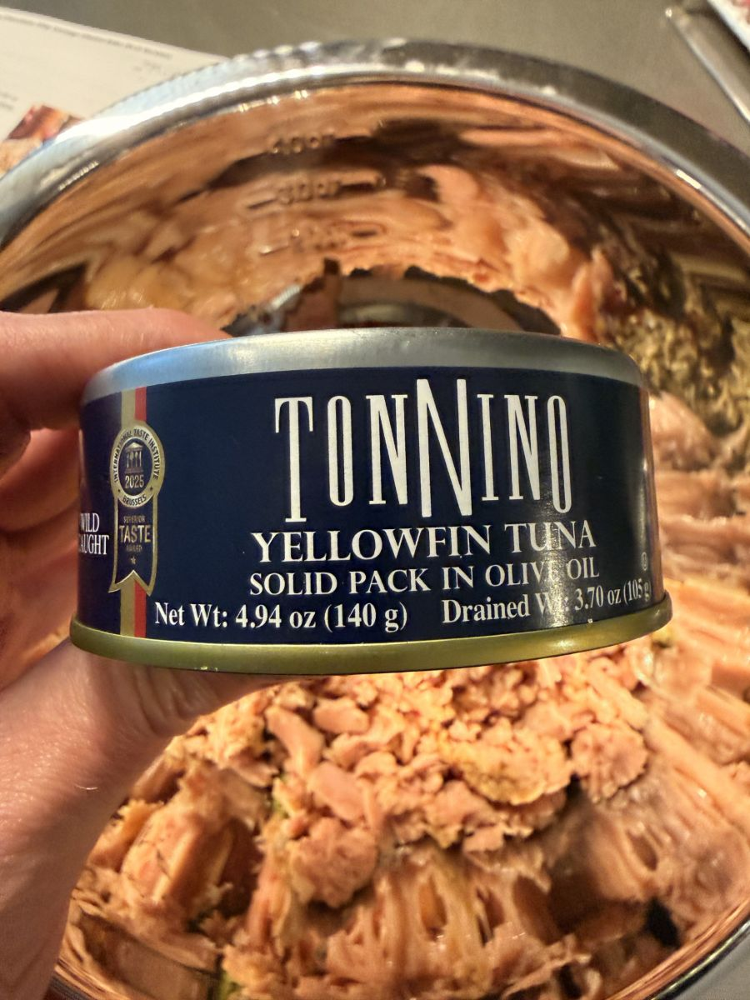

There is a particular scent—the distinct, metallic tang of mass-produced, water-packed tuna—that many of us have spent decades trying to forget. For years, tuna was relegated to the "never again" category: a reminder of cafeteria lunches and the limitations of pantry staples from our childhoods. It was a closed chapter.
Even in our own kitchen, the ingredient only made rare, obligatory appearances. Rick would occasionally whip up a tuna noodle casserole just to mix things up, but it was never something either of us truly craved or felt moved to repeat. It was functional, but it lacked the soul we seek in our daily rhythm.

But as with many things in life, sometimes the old structures must fall away to allow for new growth.
Beyond the Pantry Staple
In March of this year, a curiosity—a craving, really—surfaced. We stumbled upon a simple recipe for an Italian Tuna Salad. It wasn’t the mayonnaise-heavy, relish-laden concoction of the past; it was bright, acidic, and Mediterranean. It was a variation that promised flavor rather than just satiety.

While the first iteration was a success, we found it was merely a foundation. To find the "oomph" we look for in our culinary life, we needed more than just a meal; we wanted an experience. We began by swapping the standard canned variety for high-quality, olive-oil-packed Tonnino yellowfin. We doubled the aromatics—the red onion, the sun-dried tomatoes, and the buttery Castelvetrano olives—until the balance shifted. It became a vibrant, complex salad where every forkful holds a distinct profile.
Finding the Weekly Rhythm
Part of intentional living is learning when to break the rules to find your own rhythm. We ditched the added olive oil, opting instead to utilize the gold already present in the Tonnino jars. We swapped sharp red wine vinegar for the cleaner, brighter punch of apple cider vinegar.

And finally, we discovered the secret to success: patience. This salad is excellent upon mixing, but it is transcendent after spending the night in the refrigerator. This "rest" allows the acid to cure the onion and the herbs to truly permeate the yellowfin, creating a unity of flavor that can’t be rushed.
The result has been a total transformation of our midday routine. What was once an uninspired casserole has been replaced by a dish we have made just about every single week for lunch since that first discovery in March. It is a redemption of a humble ingredient, and proof that with the right intention, even the most overlooked items can become a permanent, celebrated part of your menu.
Ready to reimagine your lunch?
Get the full recipe for our Italian Tuna Salad →